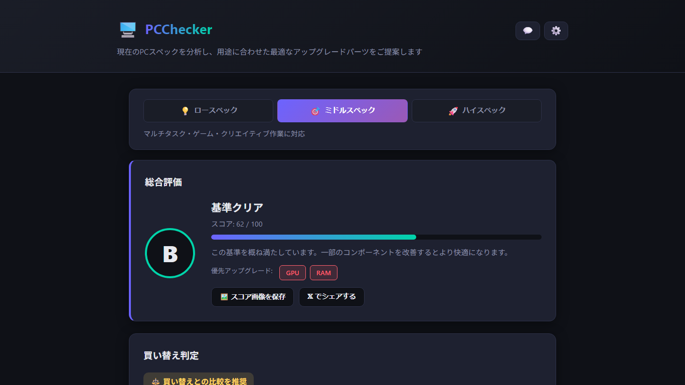

まず結論: 4項目を見ると性能の全体像がわかる
PCのスペック確認方法で最初に見るべきなのは、CPU、メモリ、GPU、ストレージです。CPUは頭脳、メモリは同時作業スペース、GPUは映像処理やゲーム性能、ストレージは保存容量と読み書き速度に関係します。
文書作成、Web閲覧、動画視聴が中心なら、極端に古いCPUでなく、メモリ8GB以上、SSD搭載であれば使える場面が多いです。Web会議、写真編集、開発、ゲームをするなら、メモリ16GB以上や用途に合ったGPUを搭載したいところです。
判断の具体的基準
性能の良し悪しは用途で変わります。次の表は、2026年時点で一般的なWindows PCを選ぶ・確認する際の目安です。すべての用途を保証するものではありませんが、最初の判断材料になります。
| 用途 | CPU | メモリ | ストレージ/GPU |
|---|---|---|---|
| メール、文書、Web | 近年のCore i3/Ryzen 3相当以上 | 8GB以上 | SSD推奨、内蔵GPUで可 |
| Web会議、複数アプリ | Core i5/Ryzen 5相当以上 | 16GB以上 | SSD、安定したネットワーク |
| 写真編集、軽い動画編集 | Core i5/Ryzen 5以上 | 16〜32GB | SSD、用途によりGPU |
| ゲーム、3D、AI系作業 | Core i5/Ryzen 5以上を目安 | 16〜32GB以上 | 専用GPU、十分な電源と冷却 |
「パソコン性能の調べ方」で大切なのは、型番を見て終わりにしないことです。たとえば同じCore i5でも世代や消費電力で性能が変わり、同じSSDでも容量不足なら快適さは落ちます。
自分のPCで確認する方法
Windowsの「設定」から確認する場合は、「システム」→「バージョン情報」を開きます。ここでプロセッサ、実装RAM、システムの種類、Windowsのエディションを確認できます。
動作中の状態を見る場合は、タスクバーを右クリックして「タスク マネージャー」を開き、「パフォーマンス」タブを選びます。CPU、メモリ、ディスク、GPUの使用率が表示されるため、重いと感じるときにどこが詰まっているかを見られます。
GPUは「設定」→「システム」→「ディスプレイ」→「ディスプレイの詳細設定」でも確認できます。より詳しく見るなら「デバイス マネージャー」の「ディスプレイ アダプター」も参考になります。
複数の画面を行き来せず、スペック確認から判断までまとめたい場合は、無料のWindows PC診断アプリ PCChecker が使えます。PCCheckerはWMIやpsutilなどでPC構成をローカル取得し、総合スコア、部品別評価、買い替え/アップグレード判定、楽天市場の参考価格を表示します。診断はすべてお使いのPC内で行われ、氏名やPC名などの個人情報を外部へ送信することはありません。

おすすめパーツ/構成: 楽天市場で探せる候補
スペック確認の結果、弱い部分がはっきりしたら、買い替え前にパーツや構成を比較します。デスクトップPCは交換しやすい一方、ノートPCはメモリやSSDが基板直付けで交換できない場合があります。また、大手メーカー製のPCは、自分でパーツを交換するとメーカー保証やサポートの対象外になることがあります。
| 確認結果 | 探す候補 | 注意点 |
|---|---|---|
| メモリ不足 | DDR4/DDR5メモリ、16GBまたは32GB | 規格、空きスロット、最大容量を確認 |
| 保存容量不足 | NVMe SSD、SATA SSD、外付けSSD | 接続方式と物理サイズを確認 |
| 全体的に性能不足 | 用途別の新品PC、BTO PC | CPU世代、保証、メモリ16GB以上を目安 |
アフィリエイト開示: このページには、楽天市場の商品リンクなど成果報酬型のアフィリエイトリンクが含まれる場合があります。商品名や価格は変動するため、購入前に最新情報を確認してください。
よくある質問
PCスペックはどこを見ればいいですか?
まずはCPU、メモリ、GPU、ストレージを見ます。用途が軽いならメモリとSSD、ゲームや編集をするならGPUとCPUも重要です。
型番だけで性能はわかりますか?
ある程度はわかりますが、世代、消費電力、冷却、メモリ容量、ストレージ構成で体感は変わります。型番と実使用時の負荷を合わせて見るのが確実です。
無料ツールは安全に使えますか?
ツールを選ぶときは、何を取得し、外部送信があるかを確認してください。PCCheckerの診断はすべてお使いのPC内で行われ、氏名やPC名などの個人情報を外部へ送信することはありません。詳細は プライバシーポリシー を確認できます。
まとめ
PCのスペックを確認する方法は、Windows標準機能だけでも可能です。ただし、数値を見て「買い替えるべきか」「どこを強化すべきか」まで判断するには、複数の情報を組み合わせる必要があります。